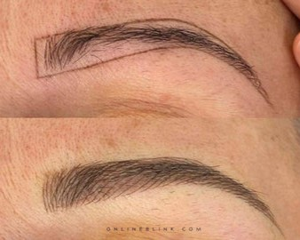

El microblading es un tratamiento de belleza que permite tener unas cejas perfectas mediante la tecnica pelo a pelo, permitiendo modificar la forma y el color de la ceja. Permite crear vello donde no lo hay de la manera mas natural posible.
El delineado semipermanente es una técnica de maquillaje que se asemeja ligeramente a lo que es un tatuaje. Es por eso que para hacerlo se realiza insertando unos pigmentos en la piel con la ayuda de una pequeña aguja. Estos pigmentos no serán permanentes, como sucede con los tatuajes, serán semipermanentes. Es decir, permanecerá intacto durante un tiempo determinado.